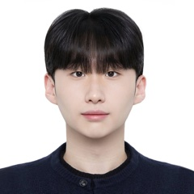

 |
Name | Gyuyeon Lim (임규연) |
|---|---|---|
| Status | Research Intern, SKI-ML, SNU Graduate School of Data Science | |
| Degree | B.S. Candidate, Computer Engineering, Gachon University | |
| Field | Time-series AI, representation learning, NLP | |
| Location | Seongnam-si, South Korea | |
| lky473736@gmail.com | ||
| Links | GitHub | LinkedIn | Google Scholar | |
| Attachments | CV_english.pdf | CV_korean.pdf |
Note: research intern studying time-series AI and NLP; lead mathematics instructor for Korean CSAT preparation since 2023.
SELECT * FROM education ORDER BY period DESC;
| ID | Period | Program | Institution | Notes |
|---|---|---|---|---|
| E-02 | 2023–2027 | B.S. in Computer Engineering (Advanced Major Track), expected | Gachon University, Seongnam-si |
|
| E-01 | 2020–2023 | Mathematics & Science Intensive Program | Hyosung High School, Seongnam-si |
2 row(s) returned.
SELECT * FROM research_interests;
| ID | Field | Description |
|---|---|---|
| R-01 | Machine Learning | Learning compact, structured, and robust embeddings from high-dimensional data. Robust representations that remain valid in unseen environments by disentangling shared, invariant information from observation-dependent variation; contrastive and self-supervised methods, data embedding, and latent space geometry. |
| R-02 | Temporal / Spatiotemporal Modeling | Forecasting and classification of multivariate sensor streams. Sequence models, graph-based dependencies, and large-scale time-series architectures. |
| R-03 | AI for Science | Deep learning on physical and biological signals (IMU, EEG, multivariate sensor data). Integrating physics priors, domain constraints, and signal structure into model design. |
3 row(s) returned.
SELECT * FROM publications WHERE type = 'journal' ORDER BY date DESC;
| ID | Date | Authors | Title | Venue | Links |
|---|---|---|---|---|---|
| J-08 | 2026.09 | Gyuyeon Lim*, Yourim Yoon | Global-Local Dual Prototype Network for Interpretable Time Series Classification | Asia-Pacific Journal of Convergent Research Interchange, Vol. 12, No. 9, pp. 293–305 | DOI |
| J-07 | 2026.07 | Gyuyeon Lim*, Myung-Kyu Yi | LPSN: A Learnable Parametric Spectral Network for Wearable Human Activity Recognition | IEEE Sensors Journal, Early Access (IF 4.5) | DOI |
| J-06 | 2026.04 | Gyuyeon Lim*, Myung-Kyu Yi | Rotation-Robust Self-Supervised Learning for IMU-Based HAR with Multi-Scale Convolutional Backbones | IEEE Transactions on Consumer Electronics (IF 10.9) | DOI | Code |
| J-05 | 2026.03 | JunYoung Park*, Gyuyeon Lim, Myung-Kyu Yi | Dynamics-Aware Action State Flow for Wearable Human Activity Recognition | IEEE Sensors Journal (IF 4.5) | DOI |
| J-04 | 2026.03 | Gyuyeon Lim*, Myung-Kyu Yi | Robust Sensor-Based Activity Recognition via Physics-Aware Disentangled Representation Learning and Feature-wise Linear Modulation Conditioning | IEEE Sensors Journal (IF 4.5) | DOI | Code |
| J-03 | 2026.02 | Gyuyeon Lim*, Myung-Kyu Yi | CAP-SSM: Context-Aware Prototypes and Selective State-Space Modeling for Efficient Wearable Human Activity Recognition | IEEE Sensors Journal (IF 4.5) | DOI | Code |
| J-02 | 2026.01 | Gyuyeon Lim*, Myung-Kyu Yi | Prototype-Guided Physics-Modulated Perceiver for Human Activity Recognition | IEEE Internet of Things Journal (IF 8.9) | DOI | Code |
| J-01 | 2025.09 | Gyuyeon Lim*, Myung-Kyu Yi | Contrastive Learning for Zero-Shot Human Activity Recognition Using Labeled Simple Actions on Wearable Devices | IEEE Sensors Journal (IF 4.5) | DOI | Code |
8 row(s) returned. * = first / co-first author.
SELECT * FROM publications WHERE type = 'conference' AND status = 'submitted';
| ID | Status | Authors | Title |
|---|---|---|---|
| C-03 | preprint | Junha Kim*, Gyuyeon Lim*, Jay-Yoon Lee | STREAM: Dynamic Channel Graphs with Autoregressive State Propagation for Multivariate Forecasting |
| C-02 | preprint | Taeyang Lee*, Gyuyeon Lim, Sebin Lee, Kevin Valencia, Jay-Yoon Lee, Xihaier Luo, Shinjae Yoo, Jiook Cha, David Keetae Park | NeuroX-EEG: Scalp Field Inpainting for Zero-Shot EEG Super-Resolution |
| C-01 | preprint | Yidu Song*, Gyuyeon Lim*, Ahyoung Choi | ENURI: Evidence Negotiation Using Reasoning over Images |
3 row(s) returned.
SELECT * FROM research_experience ORDER BY period DESC;
| ID | Period | Position | Organization | Notes |
|---|---|---|---|---|
| X-02 | 2025.12–present | Research Intern | SNU Graduate School of Data Science, SKI-ML (Prof. Jay-Yoon Lee), Seoul |
|
| X-01 | 2025.02–2025.06 | Undergraduate Research Intern | Seoul National University Hospital, BMI Lab (Prof. Kwangsoo Kim), Seoul |
|
2 row(s) returned.
SELECT * FROM academic_service;
| ID | Period | Role | Venue |
|---|---|---|---|
| S-03 | 2026–present | Reviewer | Journal of the Franklin Institute |
| S-02 | 2026–present | Reviewer | IEEE Internet of Things Journal |
| S-01 | 2026–present | Reviewer | Informatics and Health |
3 row(s) returned.
SELECT * FROM teaching ORDER BY period DESC;
| ID | Period | Position | Organization | Notes |
|---|---|---|---|---|
| T-03 | 2026.01–2026.08 | High School Math Instructor | Myungmun Seoil Academy Premium, Seongnam-si | CSAT (Suneung) and school exam preparation, STEM track |
| T-02 | 2025.09–present | Math-based University Essay Instructor | Nonsoolmate, Seoul (remote) | Grading and coaching math-based university admissions essays |
| T-01 | 2023.06–2026.06 | Lead Math Instructor | Metrix Mathematics Institute (HB Math&Eng), Seongnam-si | Primary instructor for middle/high school students and CSAT retakers; CSAT preparation for STEM track |
3 row(s) returned.
SELECT * FROM scholarships;
| ID | Date | Scholarship | Grantor |
|---|---|---|---|
| SC-04 | 2025.12 | SCI Publication Scholarship (highest honor) | Gachon University |
| SC-03 | every semester | Academic Excellence Scholarship | Gachon University |
| SC-02 | from 3rd year | National Science & Technology Scholarship | Ministry of Science and ICT (MSIT) |
| SC-01 | 2024.01 | Science & Engineering Excellence Scholarship | Anyang-Gwacheon Chamber of Commerce and Industry |
4 row(s) returned.
SELECT * FROM honors_awards ORDER BY date DESC;
| ID | Date | Award | Event | Links |
|---|---|---|---|---|
| A-09 | 2026.08 | Final rank 21st / 129 teams (solo) | SNU AI Challenge 2026 — “Temporal Event Matching via Permutation-scored Ordering Hard-Negative Listwise Ranking for Chronological Frame Reconstruction with Vision-Language Models” | Report |
| A-08 | 2026.08 | Research Division 2nd Place | 1st Gachon University Computer Engineering–AI Academic Festival | ENURI |
| A-07 | 2026.01 | Outstanding Completion | P-Career Catch 2, Career Exploration Credit Program, Gachon University | GitHub |
| A-06 | 2025.06 | 3rd Place | AI/SW Day Oral Presentation, Gachon University — YOLOv5 Children Protection Area detection | GitHub |
| A-05 | 2025.05 | Severance Challenge Award | 2025 Yonsei Yongin Severance Hospital Healthcare Hackathon | |
| A-04 | 2024.10 | ICPC Seoul Regional Finalist (168th / 376) | Team GPT, KINTEX, Goyang-si | Official |
| A-03 | 2024.01 | Grand Prize (1st place) | Future Design Project, Gachon University | |
| A-02 | 2023.06 | Grand Prize (1st place) | Software Competition, Gachon University — Smart Home with Physical Computing | |
| A-01 | 2018.11 | Minister of Oceans and Fisheries Award | 2018 National Student Science and Invention Competition |
9 row(s) returned.
SELECT * FROM certifications;
| ID | Date | Type | Certification | Result |
|---|---|---|---|---|
| CT-02 | 2026.09 | Language | TEPS (Test of English Proficiency developed by Seoul National University) | 340 (Grade 2) |
| CT-01 | 2025.05 | Technical | AICE Associate (AI Certificate for Everyone), KT | Pass |
2 row(s) returned.